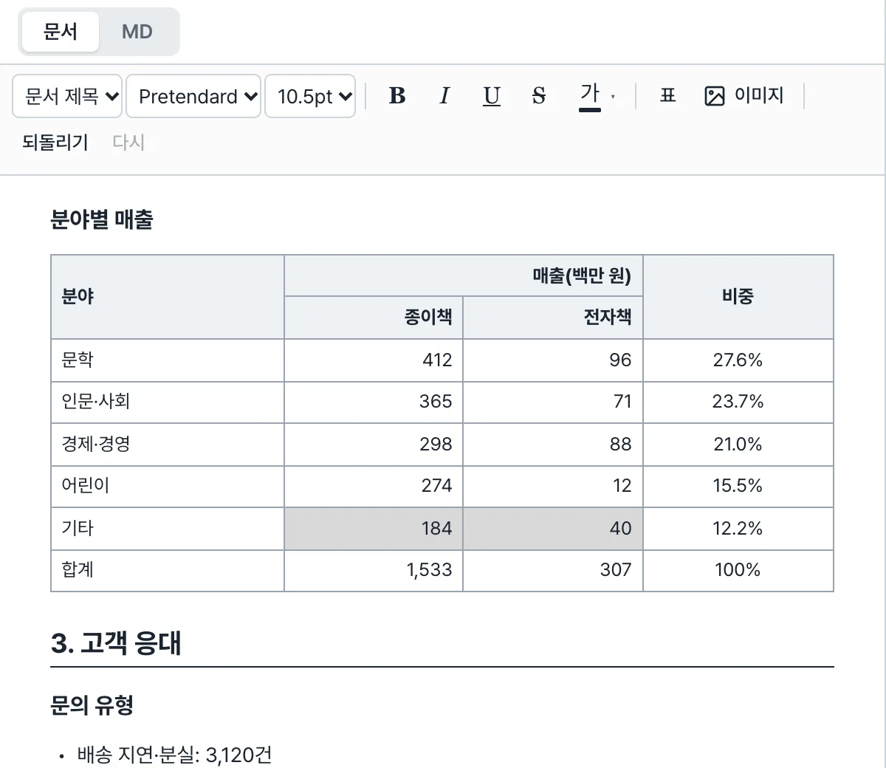
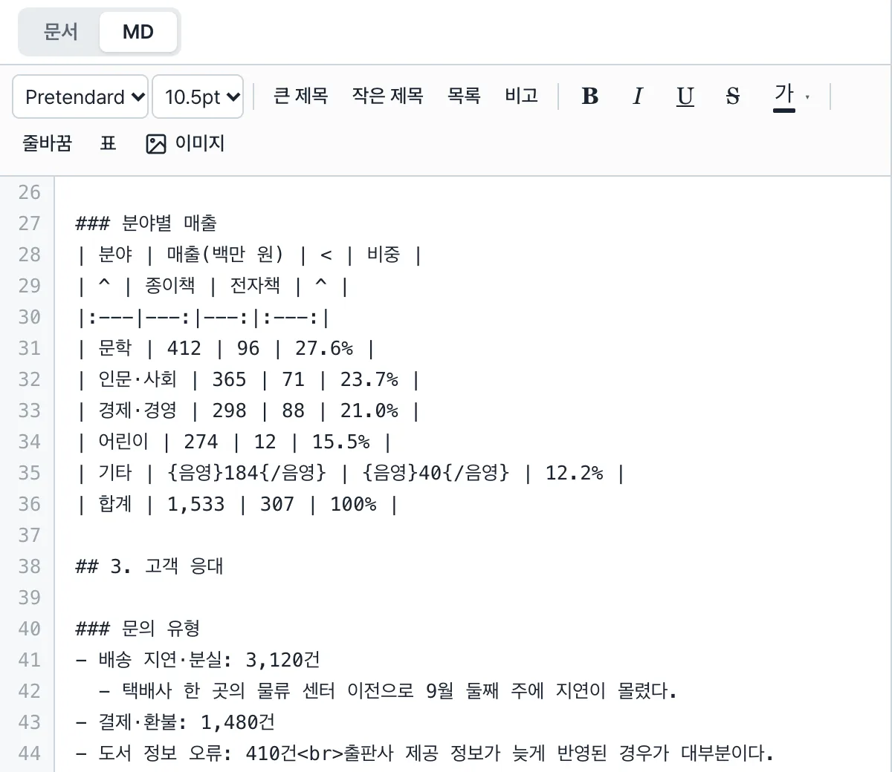
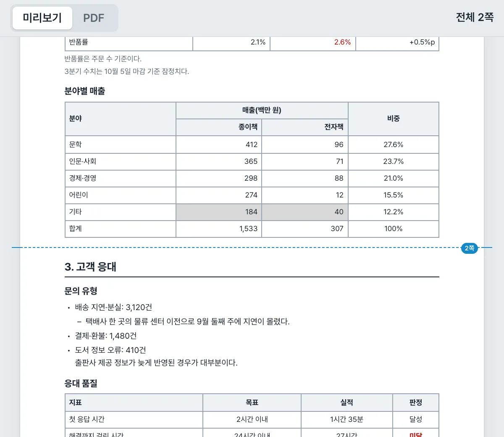
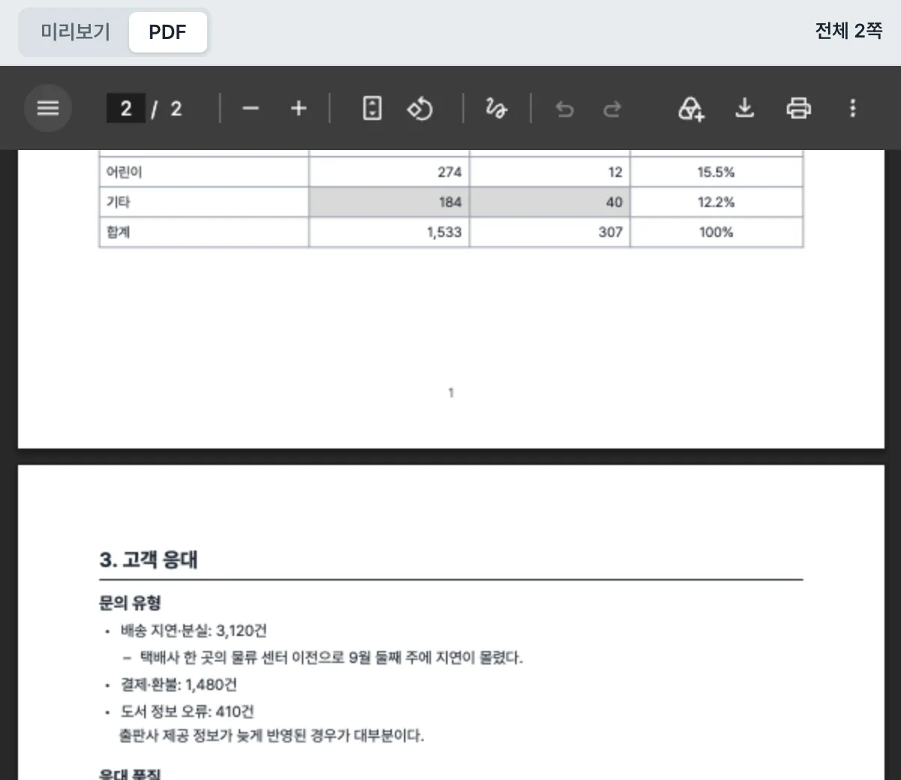
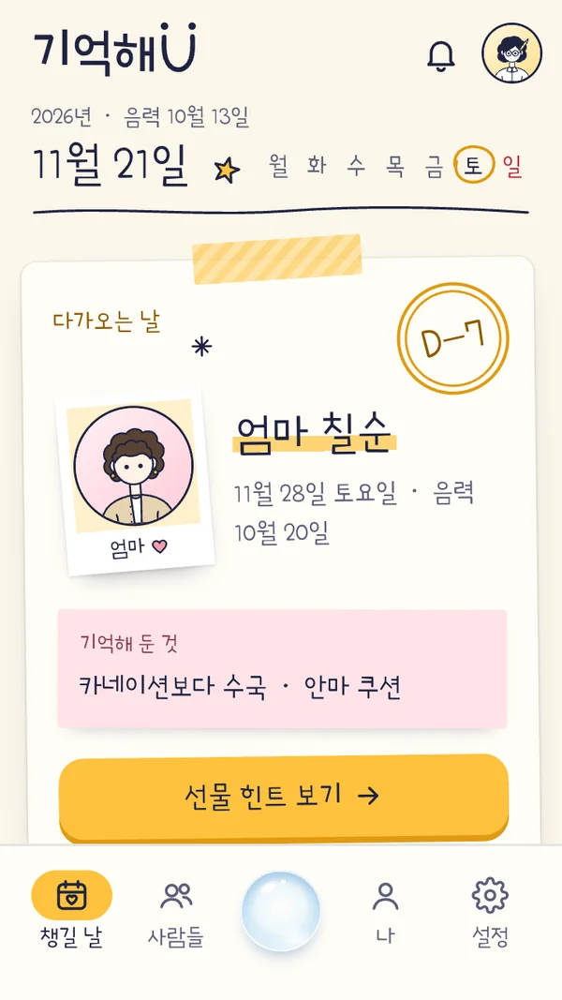
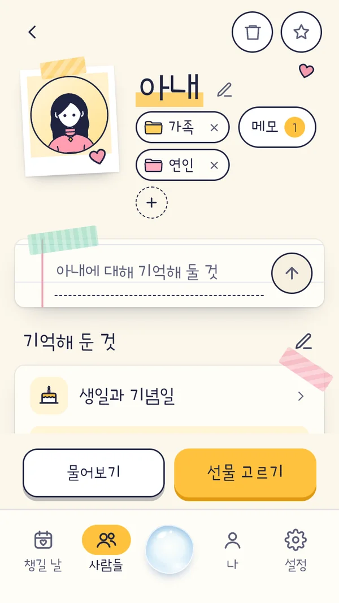
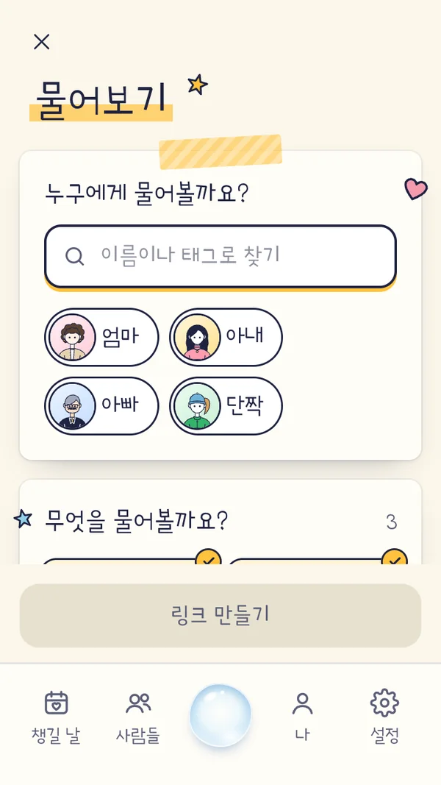

맹고
열기내 관심 분야 소식, 오늘 뉴스 핵심 요약.
- 맞춤 인사이트. 소식이 나에게 줄 영향을 짚어 줘요. 사라·팔라는 말은 안 해요.
- 하루 두 번. 출근길·퇴근길에 브리핑을 챙겨 줘요.
- 핵심만 요약. 원문 링크와 함께 짧게 정리해요.
- 귀로 들어요. 손이 바쁜 출퇴근길에도 들을 수 있어요.
정보를 찾고, 읽고, 챙기느라 드는 시간과 주의를 줄여요.
와타랩스(WataLabs)는 사람들이 매일 겪지만 그냥 참고 넘기는 불편에서 시작해요. 뉴스를 고르고 읽는 일, 보고서의 쪽을 맞추는 일, 가까운 사람의 사이즈와 생일을 떠올리는 일처럼 작아 보여도 하루를 조금씩 가져가는 일들이에요.
지금은 네 가지를 만들어 운영해요. 내 관심 분야 소식을 골라 요약하고 읽어 주는 맹고, 쪽 경계까지 PDF와 같은 문서 편집기 MDitor 라씨, 소중한 사람의 취향과 챙길 날을 기억해 두는 기억해유, 눈 오는 겨울밤에 같이 불멍하는 웹 게임 눈꽃숲 캠핑장이에요.
만드는 원칙
내 관심 분야 소식, 오늘 뉴스 핵심 요약.
보고서를 쓰는 문서 편집기, 쪽 경계까지 PDF와 같아요.




사랑하는 사람들의 컨닝페이퍼.



눈 오는 겨울밤, 같이 불멍해요.